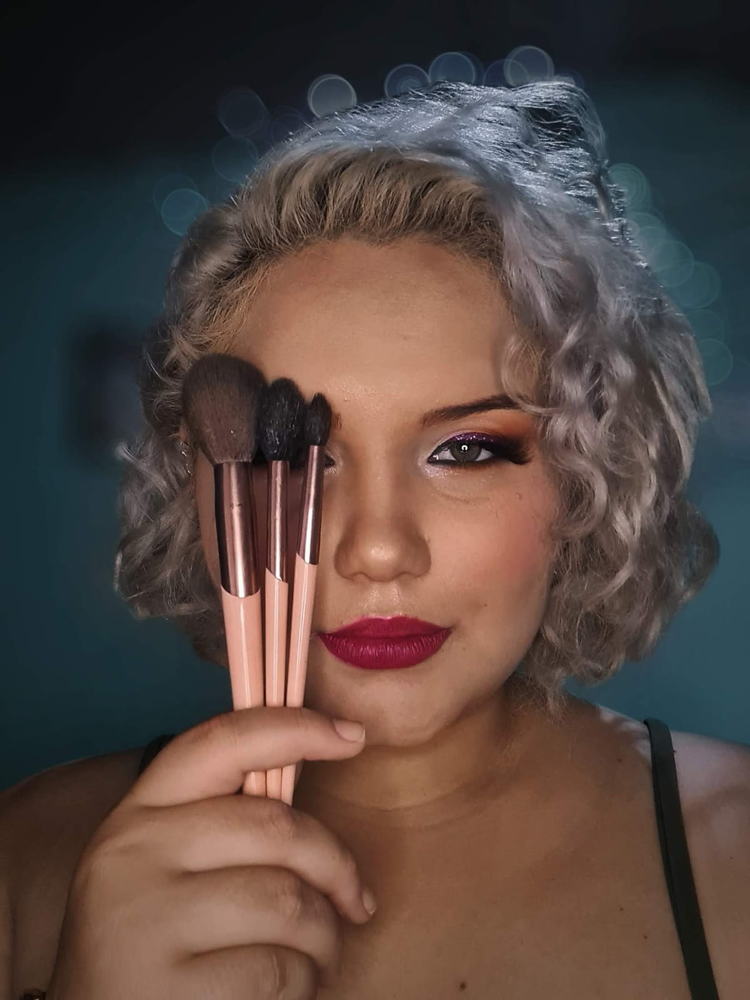

Julia's Markeup
Home
Produtos
Sobre Mim
Venha se maquear comigo!
Sou maquiadora e faço maquiagem para qualquer ocasião e Design de sobrancelhas com e sem henna. Escova,chapinha e babyliss.

Alguns dos meus produtos
Maquiagem Clean
Descrição da Maquiagem